Исследование посвящено выявлению различий между политическим дискурсом республиканцев и демократов в США на материале новостей изданий Breitbart (республиканское) и Mother Jones, Common Dreams (демократические) за период с 1 мая по 19 июня 2025 года.
Были использованы методы skipgrams, анализ тональности и тематическое моделирование.
Все коллокаты:
1. Существительные и имена собственные:
У республиканцев рядом со словом 'america' преобладают такие слова, как 'trump', 'president', 'states', 'gun', 'war', 'country', 'israel', что отражает внимание к внешней политике.
У демократов коллокаты 'america' включают 'programs', 'press', 'expression', 'border', 'movement', 'detainment' — они сфокусированы на социальных вопросах, то есть на внутренней политике.


2. Прилагательные:
Обе группы используют близкий набор описательных слов: 'good', 'bad', 'great', 'true', 'critical', 'secure', 'poor', 'dead', 'conservative'.


Все коллокаты:

 На графиках представлены наиболее частотные слова, встречающиеся рядом с 'democracy'. Сети в целом похожи: в обоих случаях фиксируются связи с 'freedom', 'people', 'rule', 'american', 'defend', 'undermine' и другими политическими терминами. Однако есть различия:
- У республиканцев чаще встречаются слова с оттенком угрозы: 'threat', 'defend', 'destroy', 'stand', 'undermine', 'military'.
- У демократов чуть выше доля нейтральных слов: 'community', 'get', 'continue', 'principle', 'say'.
На графиках представлены наиболее частотные слова, встречающиеся рядом с 'democracy'. Сети в целом похожи: в обоих случаях фиксируются связи с 'freedom', 'people', 'rule', 'american', 'defend', 'undermine' и другими политическими терминами. Однако есть различия:
- У республиканцев чаще встречаются слова с оттенком угрозы: 'threat', 'defend', 'destroy', 'stand', 'undermine', 'military'.
- У демократов чуть выше доля нейтральных слов: 'community', 'get', 'continue', 'principle', 'say'.
Посмотрим на коллокаты различных частей речи:
1. Существительные и имена собственные:
Оба графа практически идентичны: они содержат одни и те же узлы, связи и частотные значения.
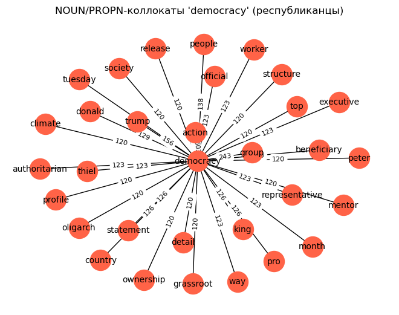

2. Прилагательные: Оба графа демонстрируют схожее ядро коллокаций — например, 'political', 'free', 'military', 'undemocratic', 'peaceful', 'authoritarian', 'unpatriotic'. Однако республиканцы чаще используют термины с негативной коннотацией ('undemocratic', 'unpatriotic', 'dead', 'fascist', 'authoritarian'), что может указывать на более критическую или защитную риторику. 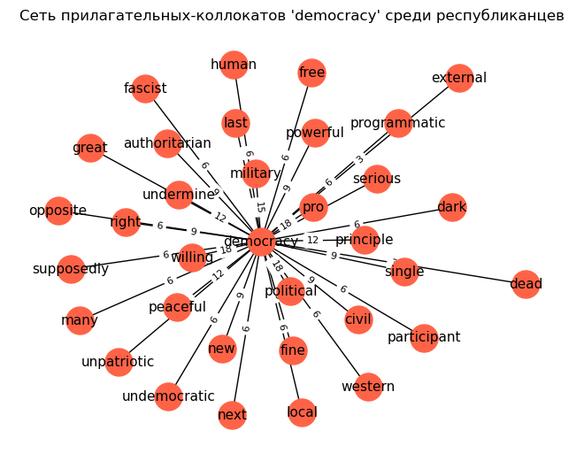 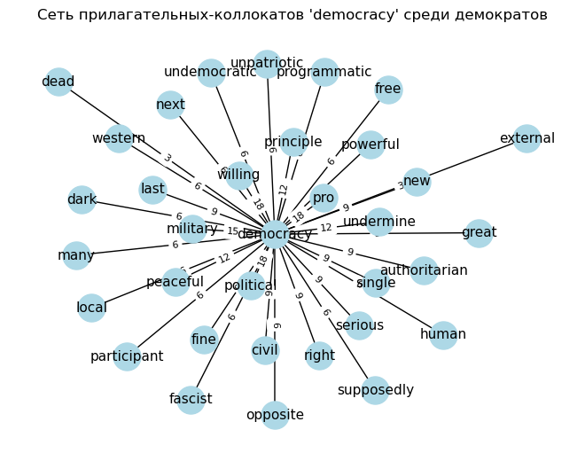
3. Глаголы: На представленных графиках изображены глагольные коллокаты слова «democracy» в корпусах текстов демократов и республиканцев. Сети практически идентичны как по составу, так и по весам связей: обе группы активно сочетают “democracy” с глаголами defend, get, say, destroy, believe, warn, make, stand, promote, unite, save, resist и др. Это свидетельствует о схожести риторики в обсуждении демократии на уровне глагольных конструкций — оба лагеря используют схожие действия для описания демократии: как защиту, так и угрозу, как активное действие, так и результат воздействия.
Тем не менее, республиканцы чуть чаще упоминают conquer, rise, turn и call, возможно, с более экспансивной или мобилизационной коннотацией, тогда как у демократов чуть заметнее promote, write, show, что может указывать на фокус на коммуникации и распространении идей. В целом различия в глаголах минимальны по сравнению с прилагательными и существительными коллокатами.
 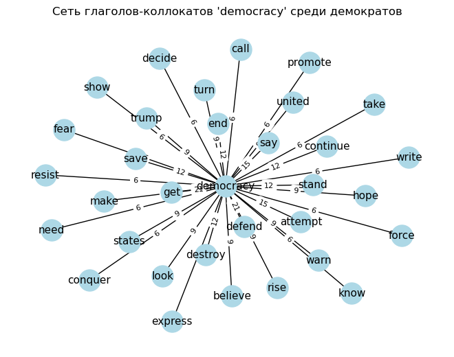
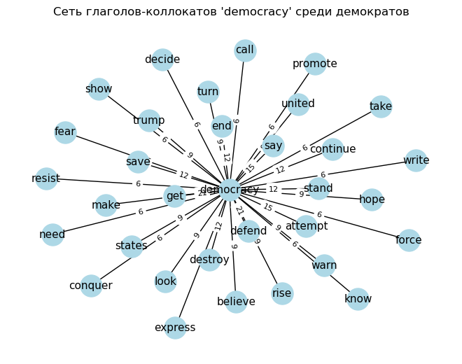
Все коллокаты: Анализ коллокаций слова migrant в республиканском и демократическом дискурсах выявил значительное тематическое пересечение, однако при этом наблюдаются важные расстановки акцентов. Оба корпуса демонстрируют сильную связь между migrant и лексемой illegal, что отражает доминирование темы нелегальной миграции в обоих политических нарративах. Также совпадают ключевые контексты, связанные с border, states, release, pay, million, biden, trump, come, say и рядом других слов.
Тем не менее, республиканский корпус демонстрирует более выраженную привязку к лексике, указывающей на контроль и безопасность: agent, ice, arrest, administration, cross, illegal, border, wage, may, come. Высокая частотность сочетаний вроде illegal migrant, border migrant и arrest migrant может отражать фокус на безопасности, правонарушениях и экономических издержках.
В демократическом корпусе аналогичные коллокаты также присутствуют, однако их распределение менее концентрировано, что может свидетельствовать о более сбалансированном и менее криминализированном подходе к обсуждению миграции. В целом, несмотря на поверхностную схожесть, тональность и фокус употребления термина migrant в контексте соседних слов может различаться, что требует дальнейшего контент-анализа.


1. Существительные и имена собственные (NOUN/PROPN): Анализ графиков NOUN/PROPN-коллокатов для слова “migrant” среди демократов и республиканцев показывает высокий уровень совпадения по ключевым существительным: в обоих корпусах выделяются такие слова, как “child”, “country”, “deportation”, “government”, “administration”, “flight”, “refugee” и “detention”. Это может свидетельствовать о схожих тематических полях (например, обсуждение миграционной политики, гуманитарных аспектов и правовых мер).
Однако есть и различия в распределении редких имен собственных. В обоих случаях встречаются, например, “bragg”, “manhattan”, “sudan”, “mamdani”, что, вероятно, указывает на конкретные события или случаи, широко обсуждаемые в СМИ обоих лагерей. Такие нейтральные или слабо окрашенные термины могут указывать на объективное освещение событий или совпадение повесток.
Важно отметить, что оба графика в значительной степени повторяют друг друга, что говорит о высокой степени межпартийного тематического пересечения именно в контексте существительных — в отличие от, например, прилагательных или глаголов, где различия более выражены. Это может быть полезным наблюдением для анализа стилистических или идеологических различий: риторика может меняться (вокабуляр прилагательных и глаголов), но информационная база остаётся схожей.


2. Прилагательные: На приведённых графиках представлены прилагательные, коллокирующие со словом “migrant” в текстах, написанных демократами и республиканцами. Несмотря на значительное совпадение лексем в обоих корпусах, можно заметить различия в акцентах. Для обеих групп характерны слова с правовым и административным контекстом, такие как “illegal”, “legal”, “deportation”, “border”, “states”, “asylum”, “release”. Однако демократы чаще используют слова с гуманитарным и институциональным оттенком — например, “university”, “group”, “report”, “visa”, “percent”, “work”. У республиканцев также присутствуют те же лексемы, но с меньшей частотой и в окружении других слов, таких как “job”, “encounter”, “many”, “say”. В целом, хотя базовый тематический набор пересекается, тональность контекста и частотные акценты могут отражать различные нарративы: более правозащитный и институциональный у демократов против более охранительного и количественно-ориентированного у республиканцев. 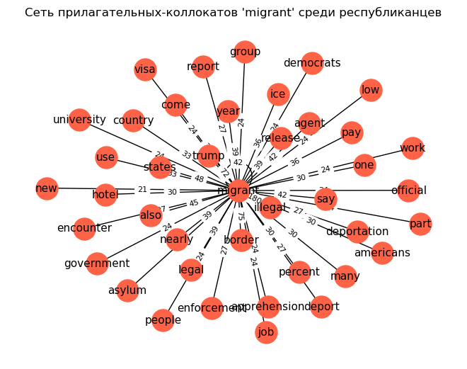 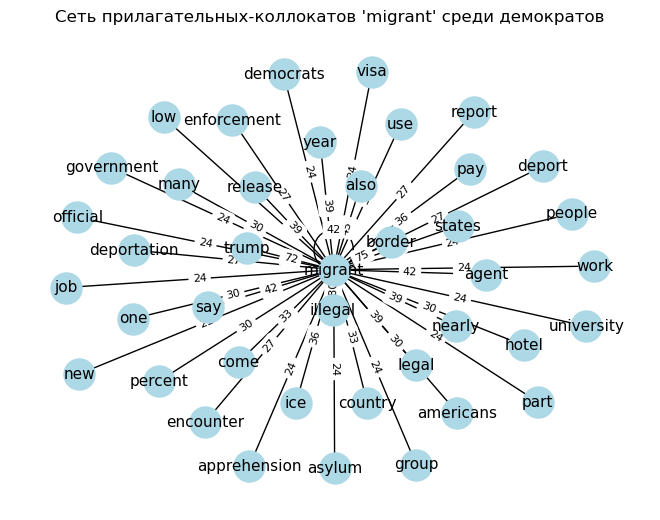
3. Глаголы: На обоих графиках визуализированы глаголы, наиболее часто встречающиеся в непосредственной близости к слову “migrant” в текстах представителей двух партий. Обе группы используют широкий спектр глаголов, связанных с миграцией, такими как release, say, come, cross, include, get, make, pay, end, use, encounter и другие — их можно отнести к нейтральной лексике, описывающей действия, совершаемые с мигрантами.
Тем не менее, в республиканском дискурсе наблюдается большее количество глаголов с выраженной негативной коннотацией, таких как prevent, apprehend, fear, cut, smuggling, declare, push, lead, claim, commit. Эти коллокаты отражают усиленный контроль, опасения, и уголовную окраску обсуждений миграции. Присутствуют также такие слова, как announce, put, hire, что может указывать на управленческий контекст (политические заявления, меры, персонал).
У демократов, напротив, несмотря на наличие пересечений (say, release, come, cross, include, declare и т.п.), наблюдается более сбалансированное распределение между нейтральными (report, use, get, follow, make, help) и менее заряженными глаголами. Интерес вызывает наличие глаголов welcome, lead, support, указывающих на потенциально более гуманную или инклюзивную тональность в подходе к теме миграции.
Таким образом, глагольные коллокаты показывают значимое различие в фреймировании миграционной темы: республиканцы склонны к риторике, акцентирующей контроль, угрозу и меры, тогда как демократы демонстрируют более широкий лексический спектр, включая как нейтральные, так и потенциально позитивные или сочувственные глаголы. 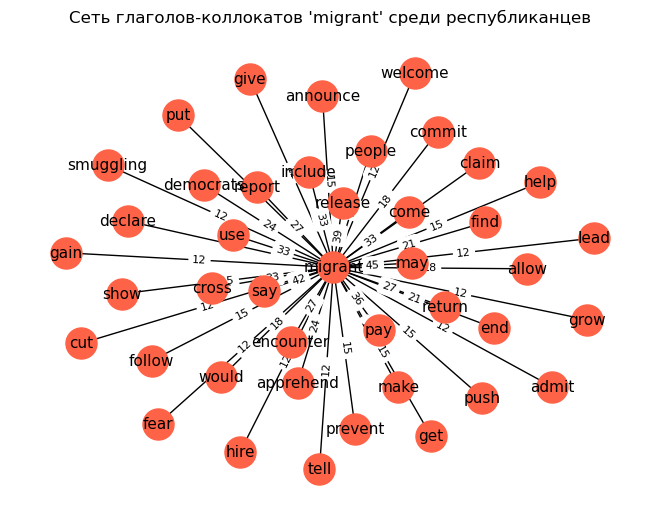 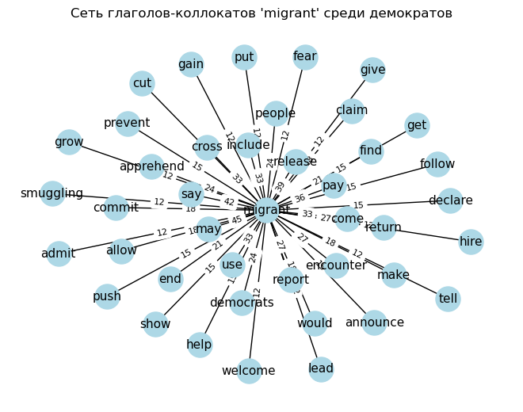
Вывод:
Результаты наглядно демонстрируют, что лексическое окружение слов america, democracy, migrant значительно различается в либеральных и консервативных медиа. Эти различия могут быть использованы как признаки идеологической принадлежности текста, а также в рамках более широкого исследования политического дискурса.
Сравнение 10 ближайших соседей по ключевым словам в либеральной и консервативной Word2Vec-моделях выявляет заметные идеологические различия в контекстах употребления. Например, слово freedom в либеральной модели ассоциируется с такими понятиями, как holiday, jurisdiction, presence, в то время как в консервативной — с terrorism, opposition, determine. Вокруг слова government у либералов встречаются efficiency, oligarchy, truth, тогда как у республиканцев — более прагматичные power, keep, put. Вокруг immigration у обеих сторон фигурируют органы принуждения (customs, enforcement, ICE), но у либералов больше фокуса на гуманитарных аспектах (bed, provider), а у республиканцев — на карательных действиях (arrest, raid). Темы climate и abortion также демонстрируют характерные различия: либеральная модель связывает climate с disaster, impact, environmental, а консервативная — с strategy, corrupt, mineral. В случае abortion, у либералов доминирует медицинский и правозащитный контекст (trimester, pill, safe), тогда как у республиканцев — социально-образовательный (gender, school, liberty). Эти различия подтверждают, что даже в распределённом векторном пространстве политическая поляризация чётко отражается в лексических ассоциациях.
| word | top-10 у демократов | top-10 у республиканцев | |-------------|----------------------------------------------------------------------------------------------------|-------------------------------------------------------------------------------------------------| | freedom | holiday, warning, jurisdiction, disturbing, presence, noncitizen, destination, whose, regard, pull | exactly, fully, hide, terrorism, die, example, determine, opposition, previous, nothing | | government | efficiency, overthrow, oligarchy, presidency, function, loot, truth, board, sycamore, pocket | case, put, work, power, clear, back, keep, around, seek, number | | immigration | enforcement, jersey, customs, lockup, crackdown, bed, provider, transfer, prisoner, admit | customs, agent, federal, arrest, officer, law, assault, enforcement, raid, ice | | security | undermine, beyond, denounce, retirement, preserve, expansion, reference, modest, outlook, homeland | administration, area, homeland, states, involve, attempt, charge, stop, county, block | | tax | cuts, jobs, ricks, trillion, saving, satellite, payroll, deprive, cap, adjust | vote, deficit, price, spending, trillion, pass, inflation, billion, tariff, might | | climate | disaster, environmental, impact, structure, ownership, objection, subsidy, pretext, breed, study | corrupt, strategic, initiative, distribute, whole, particularly, oak, strategy, mineral, detail | | abortion | trimester, volunteer, charge, result, course, record, field, handcuff, pill, safe | recent, clinic, gender, next, likely, school, education, less, index, liberty | | border | agent, fit, interrogate, writing, pen, org, visitor, relea, alistair, screen | carry, deportation, operation, deport, serve, operations, patrol, migrant, fine, allegedly | | crime | prisoner, admit, son, lockup, monster, sad, piece, commit, parade, abortion | murder, court, rapist, boat, prevent, identity, expand, previous, gang, rape | | election | win, memorial, holocaust, language, dehumanizing, anguish, quite, mean, next, frustration | quiz, primary, next, ceo, prageru, additional, vaccine, censorship, band, memorial |
Кластеризация республиканского корпуса выявила несколько плотных и интерпретируемых смысловых зон.

На представленном участке карты наблюдается отчетливо сформированный кластер, посвящённый тематике иммиграции, правопорядка и силового контроля. В центре внимания — лексика, связанная с депортацией, нелегальной миграцией и иммиграционным агентством ICE: deportation, immigrant, border, ice, deport, arrest, agent, enforcement, illegal, alien. Это однозначно отсылает к дискурсу Дональда Трампа и республиканской риторике, акцентирующей внимание на ужесточении миграционной политики и укреплении южной границы. Рядом расположены слова, связанные с протестами и силовым вмешательством: protester, riot, violent, police, raid, troop, national, guard, order, mayor, building, street. Эти лексемы, вероятно, отражают интерпретацию республиканцами протестных движений (например, BLM) как угрозы общественному порядку, требующей силового ответа. Таким образом, кластер объединяет две смежные темы — миграцию и «закон и порядок» — и демонстрирует типичный республиканский нарратив, где усиление контроля и охрана границ подаются как необходимые меры для защиты граждан и безопасности страны.

Отдельного внимания заслуживает фрагмент карты, где располагаются лексемы, связанные с военной тематикой: gun, drone, military, weapon, missile, terrorist, war, defense. Несмотря на семантическую близость, они попадают в разные кластеры — что свидетельствует о некоторой несогласованности распределений в векторном пространстве. Например, gun, drone, civilian, hit и site сгруппированы отдельно от military, missile, weapon, тогда как terrorist и war оказываются ближе к нейтральной лексике вроде peace, life, change.

В случае демократов кластеры оказываются менее четко выраженными и более «размытыми» по тематике. 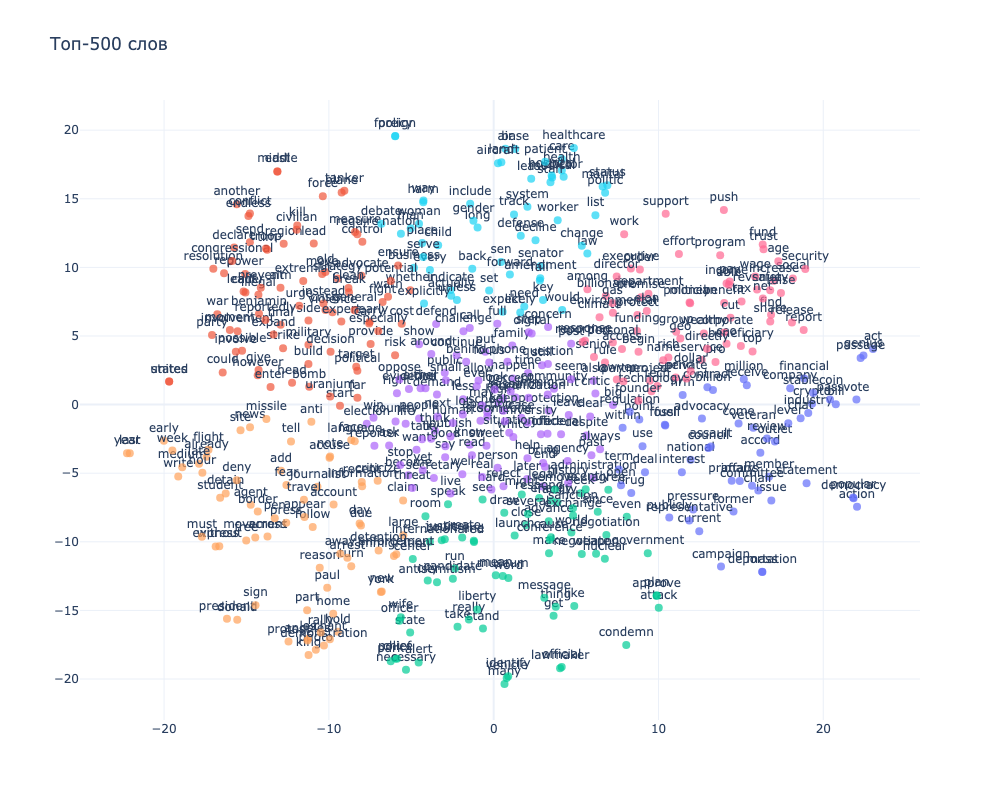
На изображении визуализирован один из кластеров, тематически связанный с вопросами границ, миграции и свободы слова. Вокруг таких слов, как border, agent, press, journalist, protest, student, arrest, detention, demonstration, формируется семантическое ядро, указывающее на социально-политическую повестку, связанную с правами мигрантов, задержаниями, уличными протестами и взаимодействием с государственными органами. Слова photo, chant, rally, free, follow, travel, appear усиливают образ массового действия и общественного движения. Включение в кластер таких слов, как journalist, press, account, accuse и criticize также подчеркивает фокус на свободе информации и возможных конфликтах между медиа и силовыми структурами. Это тематическое скопление можно интерпретировать как лексическое отражение протестной и правозащитной повестки, характерной для прогрессивного или либерального дискурса. 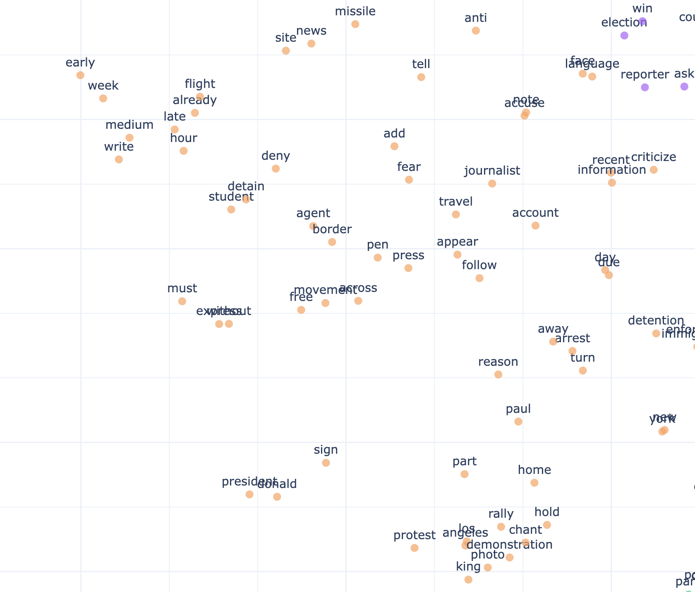
На второй кластерной карте выделяется группа слов, отражающих социальные и институциональные темы, связанные с системой здравоохранения, социальной защитой и законодательными инициативами. Вокруг понятий healthcare, hospital, medical, doctor, patient, staff формируется медицинское подмножество, фокусирующееся на вопросах доступа к лечению, кадров в здравоохранении и системе ухода. Также наблюдаются слова, связанные с законодательной и социальной структурой — senator, amendment, law, change, status, marital, politic, — указывающие на институциональный контекст обсуждаемых проблем. Наличие слов вроде gender, decline, system, need, worker и care подчеркивает обеспокоенность социальной справедливостью, неравенством и необходимыми реформами. В целом, этот кластер можно охарактеризовать как отражение лексики, типичной для левоцентристской социальной повестки — с акцентом на доступ к здравоохранению, законодательные изменения и заботу о уязвимых группах населения. 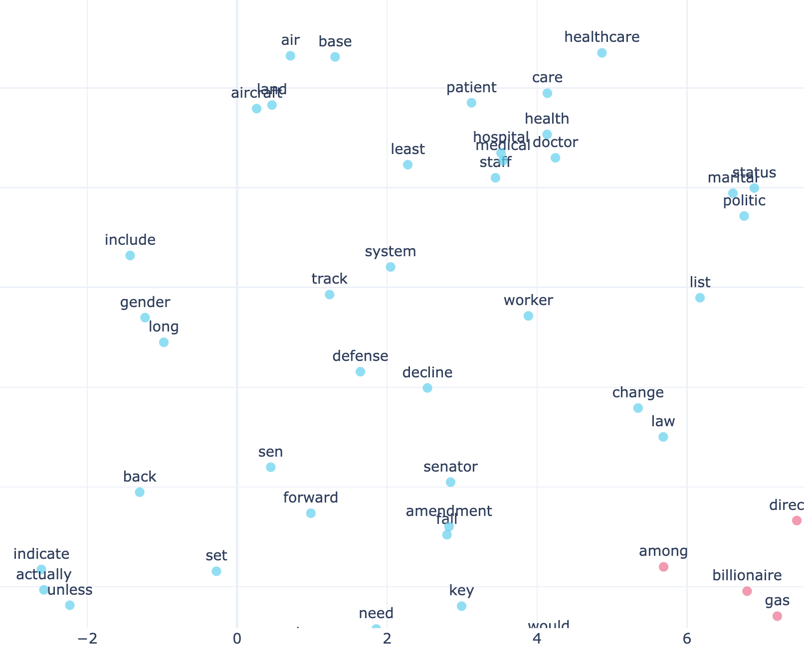
Вывод:
Анализ распределения эмоционально окрашенных слов на основе трех методов:
1. VADER
VADER - это инструмент анализа тональности, хорошо работающий с неформальными текстами. Он использует лексикон эмоционально значимых слов. Демократы в среднем высказываются заметно позитивнее (mean = +0.04), тогда как республиканские тексты имеют отрицательный средний сентимент (mean = −0.06). Это может отражать большую долю негативной риторики у республиканцев (например, в темах безопасности, иммиграции и критики властей). VADER, ориентированный на эмоциональную окраску слов, особенно чувствителен к таким аспектам. 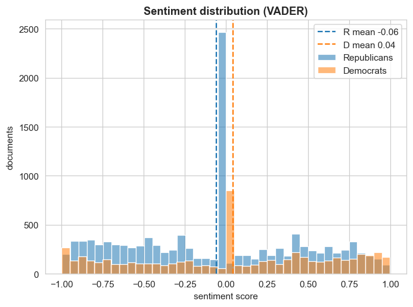
2. TextBlob
Демократы вновь демонстрируют более позитивный тон (mean = +0.06 против +0.04), но различия менее выражены. TextBlob менее чувствителен к контексту, чем VADER, но всё ещё улавливает некоторую разницу в интонации между группами. 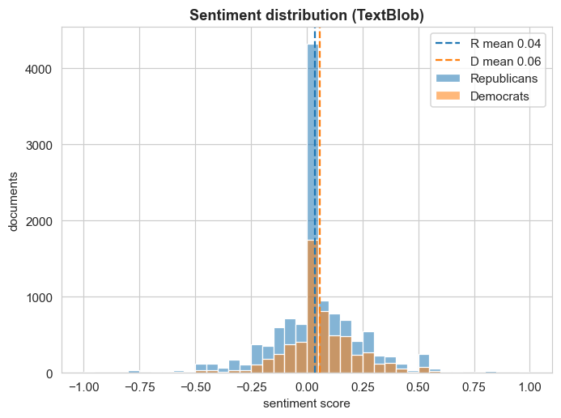
3. RoBERTa
Эта модель обучена на ~124M твитах с января 2018 по декабрь 2021 г. Мы выбрали именно эту модель, поскольку анализируем политические новости, а именно в твиттере часто обсуждается американская политика.
Интересно, что в этой нейросетевой модели обе группы получают отрицательные оценки, но демократы — ещё более низкие (−0.26 против −0.22). Это может быть связано с тем, что RoBERTa обучалась на твиттер-данных, где негативный язык используется иначе, и частая критика (например, власти, политики) у демократов могла быть интерпретирована как негатив.

Вывод:
Разные модели по-разному интерпретируют тональность политических текстов. VADER и TextBlob фиксируют более позитивную интонацию у демократов, в то время как RoBERTa приписывает обоим лагерям преимущественно негативный тон, с чуть большим смещением у демократов.
В данном исследовании мы сознательно не удаляли именованные сущности из корпуса, поскольку в политическом дискурсе они играют существенную роль. Упоминания персоналий, стран, организаций и ключевых событий нередко являются тематически значимыми элементами, определяющими структуру обсуждения. С учётом этого, для предобработки мы ограничились удалением стандартных стоп-слов, сохранив именованные сущности в тексте для дальнейшего тематического моделирования.
Сначала мы подобрали оптимальное количество тем на основе показателей perplexity и coherence
 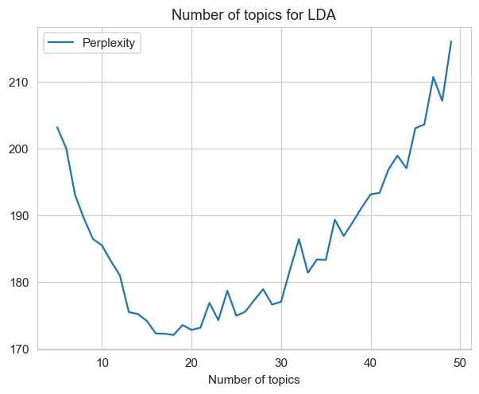
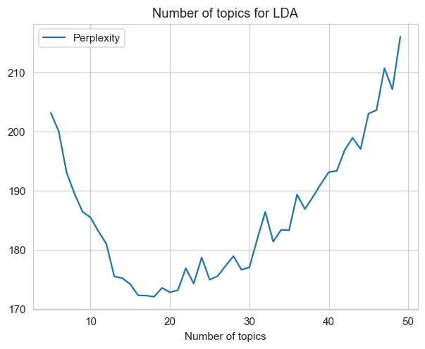
Выбрали 18 топиков - с этим значением модель демонстрирует лучшую когерентность и самую низкую перплексию.
На графиках представлено среднее распределение тем в корпусах демократических и республиканских новостей.
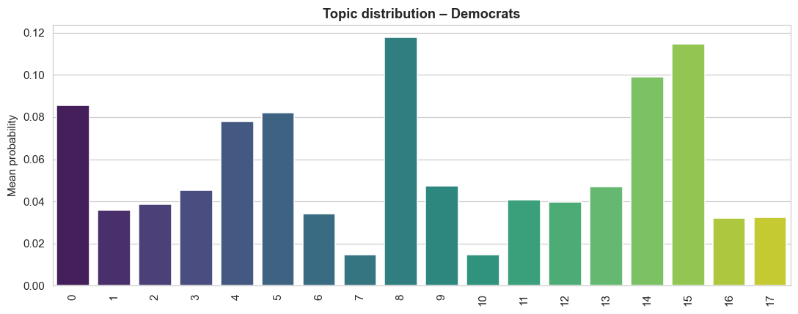

У демократических изданий доминируют темы 8, 14 и 15, каждая из которых встречается в среднем более чем в 10% текстов. У республиканских источников особенно выделяются темы 8 и 9, которые явно преобладают — каждая из них составляет около 20% всех текстов.
Какие темы из LDA-модели чаще встречаются у республиканцев, а какие — у демократов?
На графике представлено нормированное сравнение тематических распределений между республиканскими и демократическими источниками. По оси X - значения χ-score (разность средних значений вероятности темы между группами, нормированная на объединённую дисперсию).

Самые демократические темы:
Ключевые слова: bill, war, senate, president, trump, crypto, congress, republican, stablecoin, democrats, democratic
Эта тема отражает законодательную повестку и обсуждение ключевых политических решений: законы, резолюции, финансирование. Важны внешнеполитические аспекты (iran, war, israel) и внутренняя политика (congress, bill, vote, president). Упоминание crypto, stablecoin может говорить о законах, связанных с регуляцией криптовалют.

Тема 04 — «Студенты, границы, протесты»
Ключевые слова: student, states, border, protest, detention, free, deportation, fear, united
Это тема о социальных правах, протестах, миграции и образовании. Упоминаются student, protest, free, detention, deportation, border — возможно, речь идёт о студенческих инициативах, включая иммиграционную политику и антидепортационные движения.
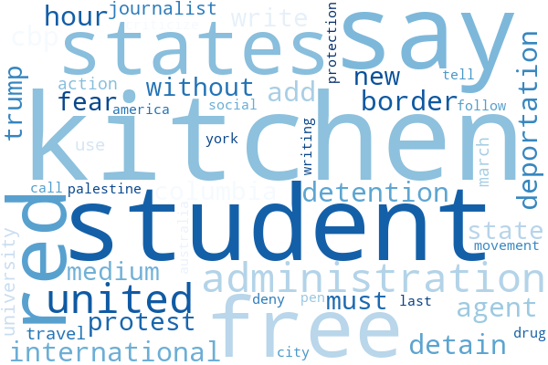
Тема 05 — «Антисемитизм, политика, полиция»
Ключевые слова: mamdani, antisemitism, candidate, jewish, muslim, police, state, law, lawmaker, speak
Тема поднимает вопросы национальной и религиозной идентичности, гражданских прав, борьбы с антисемитизмом и исламофобией. Также, возможно, речь идет об ирано-израильском конфликте.

Тема 15 — «Социальная безопасность, льготы, ветераны»
Ключевые слова: social, security, benefit, veteran, healthcare, fund, accord, executive, resolution
Тема подчёркивает важность социальной политики и социальной защиты Также заметны термины из политического контекста: trump, senate, law.
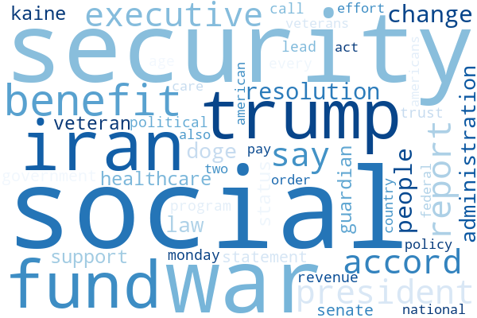
Самые республиканские темы:
Тема 01 — «Новости, Хамас, Газа, патриотизм»
Ключевые слова: news, breitbart, hamas, gaza, attack, aid, terrorist, patriot, military, soliman, report, author, follow
Эта тема касается военных конфликтов на Ближнем Востоке.
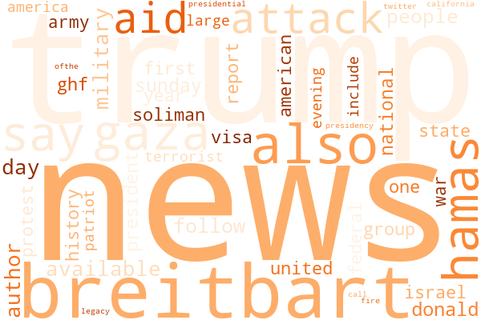
Тема 06 — «Россия, Украина, Трамп и медиа»
Ключевые слова: trump, say, make, news, russia, ukraine, attack, breitbart, medium, post, parade, military, child
Эта тема касается конфликта России с Украиной.

Тема 08 — «Трамп, президент, народ, политика»
Ключевые слова: trump, president, donald, say, people, know, make, one, state, biden, house, administration
Эта тема сфокусирована на персоналиях и лидерстве - речь идет о фигуре Дональда Трампа. Часто встречаются обобщённые политические термины: president, state, people, know, say, что может указывать на риторику, связанную с высказываниями, заявлениями и медийной реакцией. Повторяются также фамилии biden и musk.

Тема 09 — «Иммиграция, ICE, закон и порядок»
Ключевые слова: ice, trump, law, enforcement, los angeles, illegal, arrest, criminal, immigrant, riot, federal, newsom, guard
Тема явно связана с иммиграционной повесткой и безопасностью. Часто встречается los angeles - это связано с недавними беспорядками в городе.
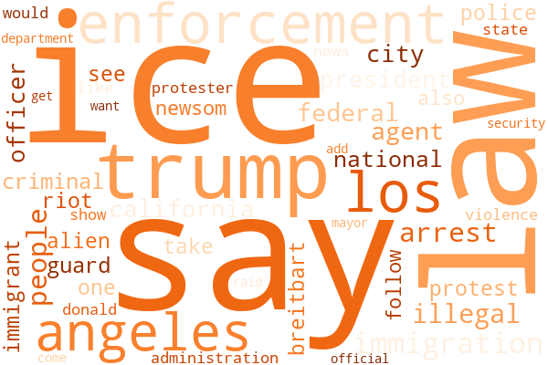
Модель LDA действительно улавливает мировоззренческое различие между политическими дискурсами республиканцев и демократов